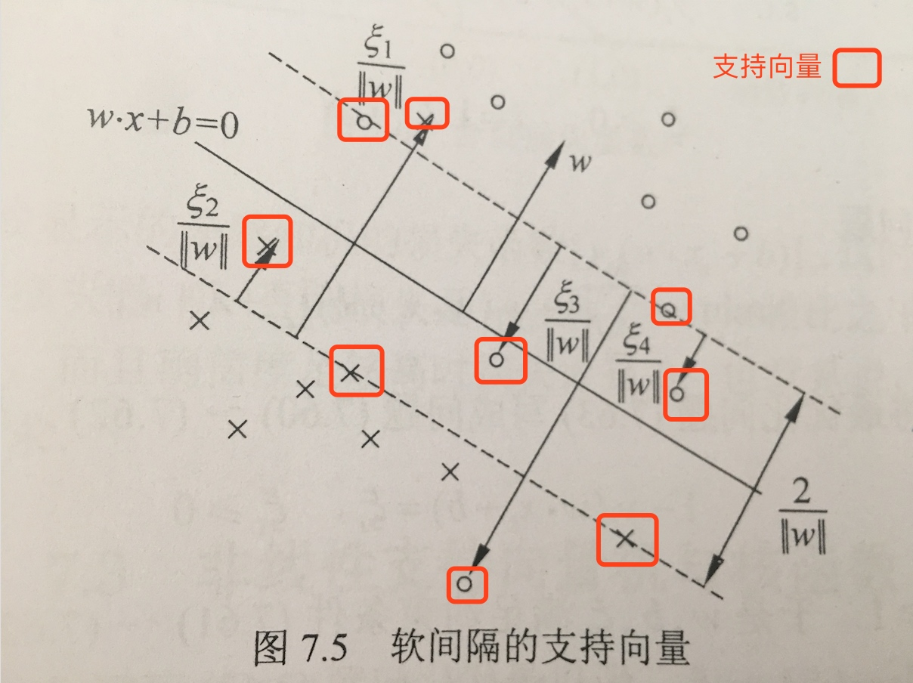

支持向量机属于上一节中说的硬输出的方法，是从几何角度出发考虑的。
在介绍SVM之前，先解释一下几个基本概念。

函数间隔与几何间隔
一般的，一个点距离分离超平面的远近可以标识分类预测的确信程度。当超平面\(wx+b=0\)确定后，\(|wx+b|\)的大小能够相对的表示远近，而\(wx+b\)的符号与\(y\)类别是否一致则可以表示是否分类正确。
\[d_i = y_i(wx_i+b)\] 定义函数间隔\(d = \min d_i\)
但是很明显的会发现这个间隔与\(w\)的量纲是有关系的，\(kw+kb\)与之前超平面是一样的，但是间隔却差了k倍。因此需要几何间隔
\[d_i = y_i(\frac{w}{||w||}x_i+\frac{b}{||w||}), d = \min d_i\]
间隔最大化
有了前面关于间隔的定义，或者是关于分类距离的定义，就有了目标。SVM的目标就是: 求解能够将数据集正确划分并且几何间隔最大的分离超平面。
注：对于线性可分的数据，超平面有无数个(等价于感知机)，但是间隔最大的只有一个。间隔最大其实是两个要求:
- 能尽可能的将正负例区分开
- 对于难分的点(距离平面较近的点)也有很好的置信把握，即泛化能力会好一些
SVM对应的三种问题类型
根据分类问题，可分为以下三种
- 线性可分与硬间隔最大化
- 线性支持向量机与软间隔最大化
- 非线性支持向量机与核函数
这些会在下面中进行详细介绍
支持向量
这个需要看完下面关于三部分的介绍之后，再来了解这个概念。
- 在线性可分的情况下，样本中与超平面距离最近的样本点称为支持向量. 支持向量是满足\(y_i(wx_i+b)-1=0\)的点。
- 分隔边界最终只是由支持向量的点决定的，其他距离比较远的点并没有影响。
1.线性可分与硬间隔最大化
先讨论一种最简单的情况，当数据集本身可以线性可分时候(实际数据中可能并没有这么好的性质)，我们只要找到对应的超平面即可。从前面的集合图形上我们的目标：希望每个点到超平面的间隔的最小值达到最大，即\(max min d_i\)
数学模型：\[max_{w,b} d(几何间隔)\]
\[s.t \quad d_i = y_i(wx_i+b)>= d, i=1,..n\]
因为几何间隔\(d=d'/||w||\)，所以原问题等价于
\[max_{w,b} \frac{d'}{||w||}\]
\[s.t \quad d_i = y_i(wx_i+b)>= d', i=1,..n\]
注意到
- 函数间隔的取值\(d'\)并不影响最优解\(w,b\)的求解。(如果w,b是最优解，则\(kw,kb\)也是，函数距离就是\(d'\)和\(kd'\))。所以这里可以取\(d'=1\)。
- \(1/||w||\)与\(\frac{1}{2}||w||^2\)是等价的
因此最终优化的问题等价于如下的凸二次规划问题：
\[min_{w,b} \frac{1}{2}||w||^2\]
\[s.t \quad d_i = y_i(wx_i+b) -1 >=0, i=1,..n\]
解法：关于这个优化问题的解法，在后面会详细给出。可以证明这个解是存在且唯一的。
几何角度
- 过两个类的边界的点的平行线(\(wx-b=1, wx-b=-1\))，有点类似于楚河汉界
- 将两条平行线进行旋转，保证同类划分不变。两者距离就会改变
- 落在两个平行线上的异类点就是支持向量

2.线性支持向量机与软间隔最大化
上一节说的是对线性可分数据的，如果数据本身不可分该怎么办呢，此时线性分割必然存在误分类的点？对于线性不可分我们不可能要求其严格满足上面说的不等式约束。这时我们只能退而求其次：
思路：使得之前的几何间隔尽量大，同时使误分类的个数尽可能少
数学表示：对于每个样本，类似运筹学中的方法我们可以引入一个松弛变量\(\xi_i\ge 0\),满足\(y_i(wx_i+b)\ge 1-\xi_i\) 之前是要求一定要大于等于1，现在因为并不完全可分，所以不一定要大于等于1。
数学模型：
\[min_{w,b} \frac{1}{2}||w||^2 + C\sum_1^n \xi_i\]
\[s.t \quad y_i(wx_i+b)>=1-\xi_i, i=1,..n\]
\[\xi_i >= 0\]
这时候其实可以发现线性可分的相当于是这里的一种特殊情况，即\(\xi_i=0\)
求解：
该优化问题的拉格朗日函数是
\[L(w,b,\xi,\alpha,u)=\frac{1}{2}||w||^2+C\sum\xi_i-\sum\alpha_i(y_i(wx_i+b)-1+\xi_i)-\sum u_i\xi_i\]
因此原问题等价于 \[\max_{\alpha,u}\min_{w,b,\xi}L\]
（1）首先求L对\(w,b,\xi\)的极小

可得\[\min_{w,b\xi}L=-\frac{1}{2}\sum_{i=1}^n\sum_{j=1}^n \alpha_i\alpha_jy_iy_j(x_i*x_j)+\sum_{i=1}^n\alpha_i\]
(2) 再对\(\min L\)求最大，即有
\[\max_{\alpha}-\frac{1}{2}\sum_{i=1}^n\sum_{j=1}^n \alpha_i\alpha_jy_iy_j(x_i*x_j)+\sum_{i=1}^n\alpha_i\]
\[s.t.\quad \sum\alpha_iy_i=0\]
\[C-\alpha_i-u_i>=0;\alpha_i>=0;u_i>=0\]
最后一个条件其实等价于\(0\le\alpha_i\le C\)
对于线性可分问题其max函数是一样的，只是约束条件是\(0\le\alpha_i\)
【定理】若\(\alpha^*=(\alpha_1^*,...\alpha_n)\)是上述优化问题的一个解，若存在一个分量\(0<\alpha_j^*<C\)，则原始问题的解可按如下形式求得
\[w^* = \sum\alpha_i^*y_ix_i\]
\[b^*=y_j-\sum_{i=1}^n y_i\alpha_i^*(x_i*x_j)\]
从中可以发现b的解并不唯一。
最终的分离超平面是\[\sum\alpha_i^*y_i(x_i*x_j)+b^*=0\]
分类的决策函数是\[f(x)=sign(\alpha_i^*y_i(x_i*x_j)+b^*)\]
几何解释
- 如果在分解边界上，则\(\xi_i=0\),距离是1
- 如果是在两个分界边界中间，\(0<\xi_i<1\)
- 越过分界边界，到了另外一边，\(\xi_i >1\) 这个时候\(y_i(wx_i+b)\ge 1-\xi_i\)是小于0的，属于误分类，在优化的时候会考虑

合页损失函数：与原优化问题等价的一种损失函数形式
\[\min_{w,b} \sum[1-y_i(wx_i+b)]_{+}+\lambda||w||^2\]
3.非线性支持向量机与核函数
当数据的分布呈现的是一种非线性的时候，用之前的线性分割的方法肯定就会出现问题。比如数据是在一个椭圆内外分布，这个时候就需要先对原始数据做一个映射，\(x_1^2,x_2^2\)然后变成线性可分的。而这里主要用到了核技巧。
【核函数】如果存在一个映射\(\phi(x):X-> H\),使得对于所有\(x,z\in X\),函数\(K(x,z)\)满足
\[K(x,z)=\phi(x)*\phi(z)\]
则\(K(x,z)\)为核函数，\(\phi(x)\)为映射函数。
核函数的想法是：在学习中值定义核函数，而不显示的定义映射函数，通常映射函数不太好找且不唯一。
在支持向量机中的应用：
如前所述，在支持向量机的对偶问题中，只涉及样本之间的内积运算。\[W(\alpha)=\max_{\alpha}-\frac{1}{2}\sum_{i=1}^n\sum_{j=1}^n \alpha_i\alpha_jy_iy_j(x_i*x_j)+\sum_{i=1}^n\alpha_i\]
因此可以用核函数代替
\[W(\alpha)=\max_{\alpha}-\frac{1}{2}\sum_{i=1}^n\sum_{j=1}^n \alpha_i\alpha_jy_iy_jK(x_i,x_j)+\sum_{i=1}^n\alpha_i\]
常用的核函数
- 多项式核函数 \(K(x,z)=(x*z+1)^p\)
- 高斯核函数 \(K(x,z)=exp(\frac{-||x-z||^z}{2\sigma^2})\)
- 字符串核函数
优化算法SMO
前面介绍了SVM中的三类问题，最终都是通过一个凸二次规划进行求解。当样本量较大的时候，SMO是一种相对求解较快的方法。简言之，是采用了启发式算法，每次只更新两个\(\alpha_i,\alpha_j\)
https://www.cnblogs.com/nolonely/p/6541527.html
Sequential Minimal Optimization A Fast Algorithm for Training Support Vector Machines
代码
sklearn.svc模块 http://scikit-learn.org/stable/modules/svm.html#svm
主要包含
- SVC 标准的
from sklearn import svm
X = [[0, 0], [1, 1]]
y = [0, 1]
clf = svm.SVC()
clf.fit(X, y)
以iris数据为例
### iris数据
from sklearn import datasets, svm
import matplotlib.pyplot as plt
import numpy as np
iris = datasets.load_iris()
X = iris.data[:, :2]
y = iris.target
# model
C = 1.0
model = svm.SVC(kernel='linear', C=C)
model.fit(X, y)
## 绘制可视化图
x1 = X[:,0]
x2 = X[:,1]
h=0.1
x_min, x_max = x1.min()-1, x1.max()+1
y_min, y_max = x2.min()-1, x2.max()+1
xx,yy = np.meshgrid(np.arange(x_min, x_max, h),
np.arange(y_min, y_max, h)) #生成对应的坐标矩阵
Z = model.predict(np.c_[xx.ravel(), yy.ravel()]) # 在新的坐标点上预测分类
Z = Z.reshape(xx.shape)
plt.contourf(xx, yy, Z, cmap=plt.cm.coolwarm, alpha=0.8)
plt.scatter(x1, x2, c=y, cmap=plt.cm.coolwarm, s=20, edgecolors='k')
plt.xlabel('Sepal length')
plt.ylabel('Sepal width')

- NuSVC 与SVC的优化目标函数略微不同
- LinearSVC： 只针对linear kernel
在进行多分类的时候SVC中参数decision_function_shape可以选择是ovo还是ovr
LinearSVC是通过参数multi_class进行选择，
小结